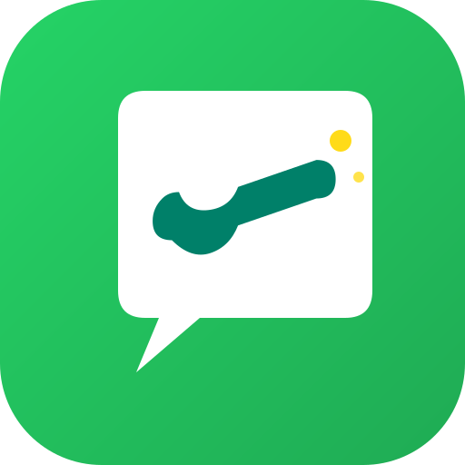
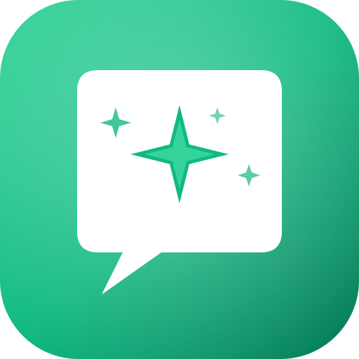

5 proposte logo in stile WhatsApp ma originali (no trademark issues per Play/App Store)
✓ Tap su un logo per scegliere · ✓ Tutti SVG vettoriali 512×512

Come apparirebbero sulla home screen del telefono (rounded square style)